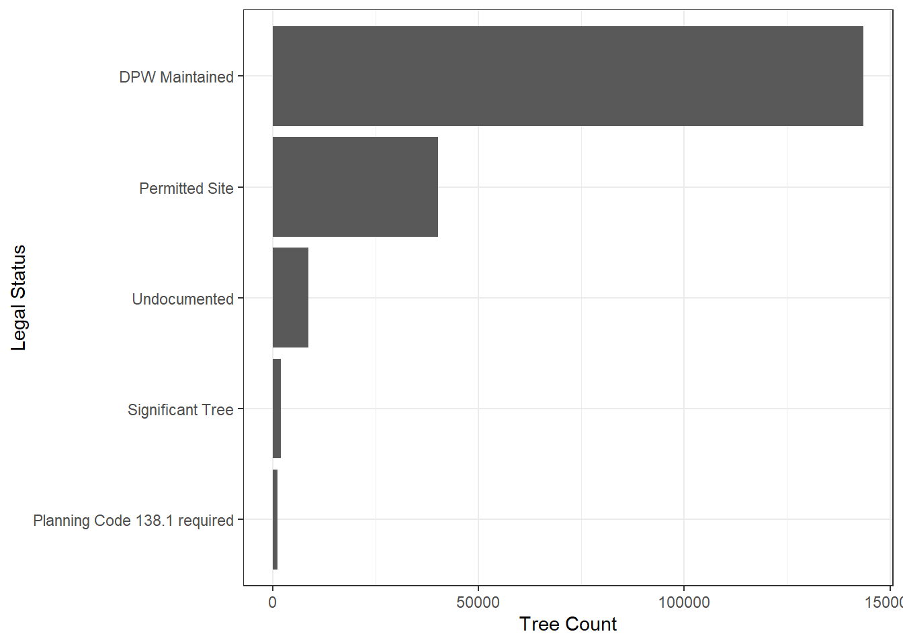
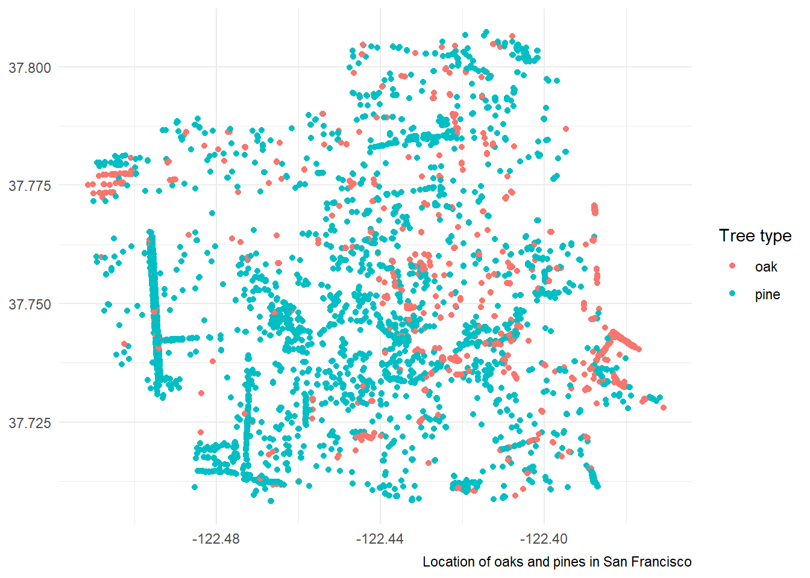

Code
library(tidyverse)
library(here)
library(sf)
library(tmap)library(tidyverse)
library(here)
library(sf)
library(tmap)sfo_trees_df <- read_csv(here('data', 'sfo_trees', 'sfo_trees.csv')) %>%
janitor::clean_names()
# read_csv rather than read.csv is tidyverse and works a bit betterFind counts of observations by legal_status, then select the statuses with the five highest tree counts.
n()) by legal statusestop_5_status <-
sfo_trees_df %>% group_by(legal_status) %>%
summarize(tree_count = n()) %>%
ungroup() %>%
slice_max(tree_count, n = 5) ggplot(data = top_5_status,
aes(y = fct_reorder(legal_status, tree_count),
x = tree_count)) +
geom_col() + # plots columns
labs(y = "Legal Status",
x = "Tree Count") +
theme_bw()
Restrict the dataset to just trees which are both “Permitted Site” AND caretaker is “MTA or”DPW”.
Filter the dataset by Permitted site, then by MTA OR DPW
permitted_mta_dpw <-
sfo_trees_df %>%
filter(legal_status == "Permitted Site" &
caretaker %in% c("MTA", "DPW"))“species” contains “oak” OR “pine” select columns “species”, legal status”, “plant_date”, “latitude”, “longitude”
oak_pine_df <- sfo_trees_df %>%
filter(str_detect(species, "Oak") |
str_detect(species, "Pine")) %>%
select(species, legal_status,
plant_date, latitude, longitude) %>%
mutate(type = ifelse(str_detect(species, "Oak"),
"oak", "pine"))ggplot(data = oak_pine_df,
aes(x = longitude, y = latitude, color = type)) +
geom_point() +
theme_minimal() +
theme(axis.title = element_blank()) + # remove axis titles
labs(color = "Tree type",
caption = "Location of oaks and pines in San Francisco")
ca_native_df <-
read_csv(here('data/sfo_trees/ca_native_spp.csv'))Compare CA native Species to those in our SF trees database? Add column and specify if tree is native or not.
sfo_trees_native <- sfo_trees_df %>%
separate(species,
into = c("spp_sci", "spp_common"),
sep = " :: ") %>%
select(starts_with('spp'), 'plant_date', 'legal_status', 'longitude', 'latitude') %>%
mutate(ca_native =
(spp_sci %in% ca_native_df$scientific_name))
# true or false, native or not
sfo_native_status <- sfo_trees_native %>%
group_by(legal_status, ca_native) %>%
summarize(n_trees = n(),
n_species = n_distinct(spp_sci))